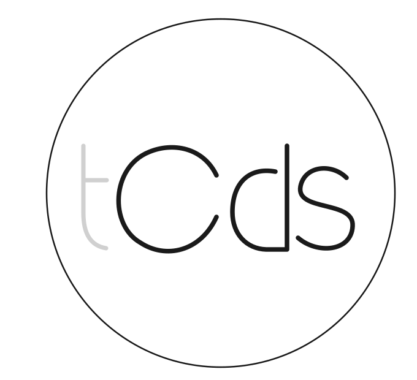
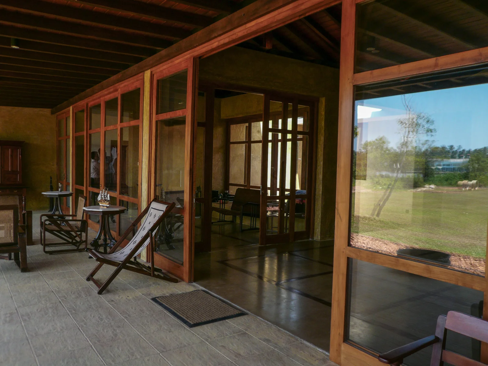
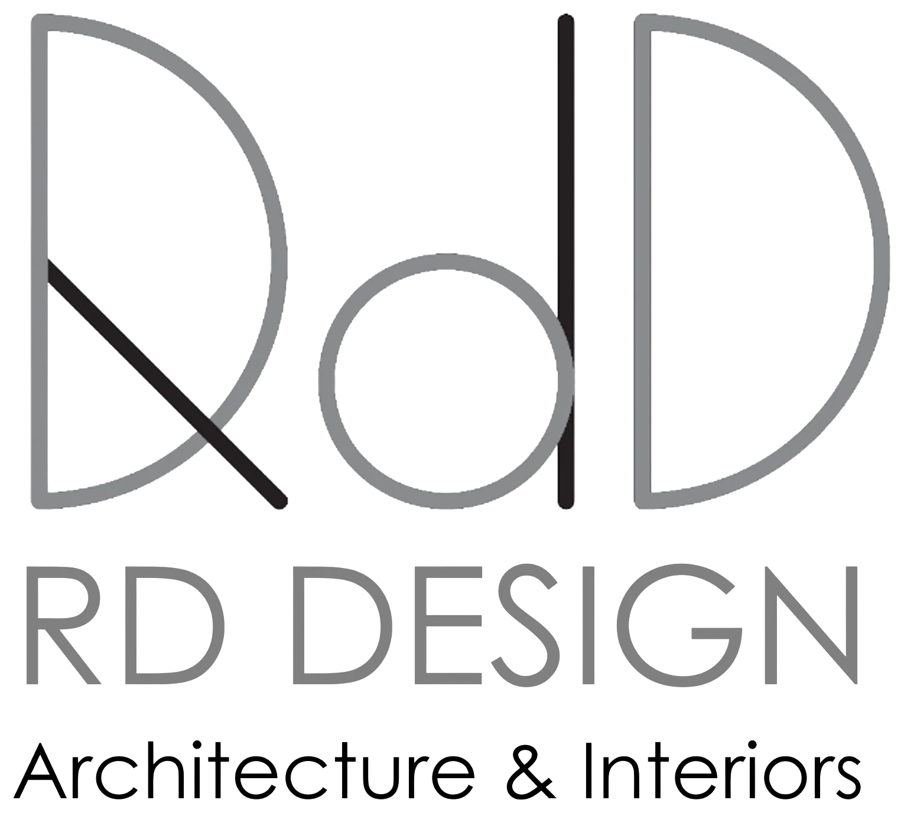
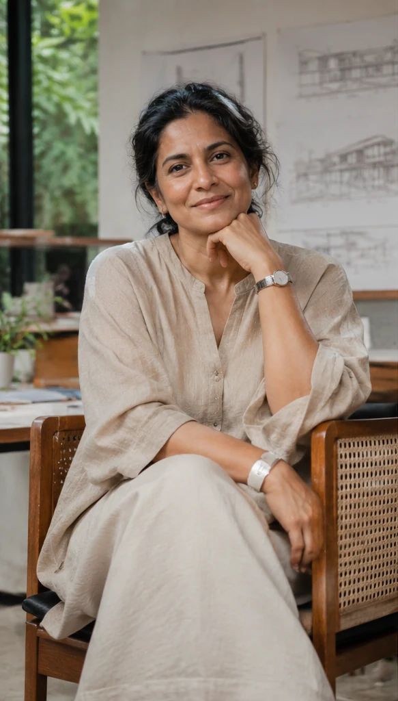
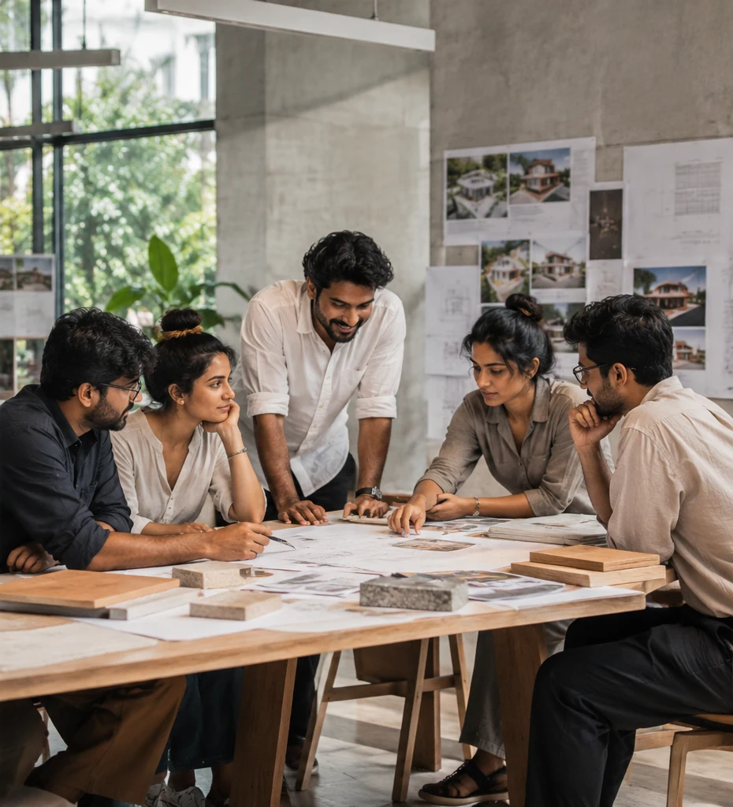
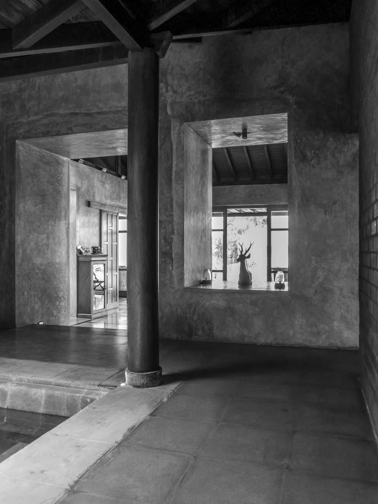
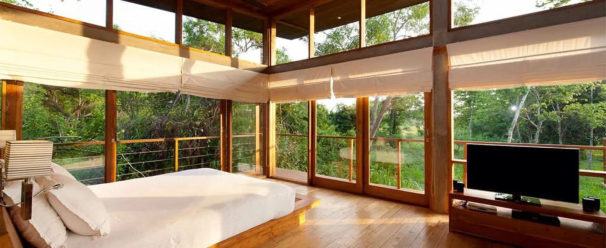
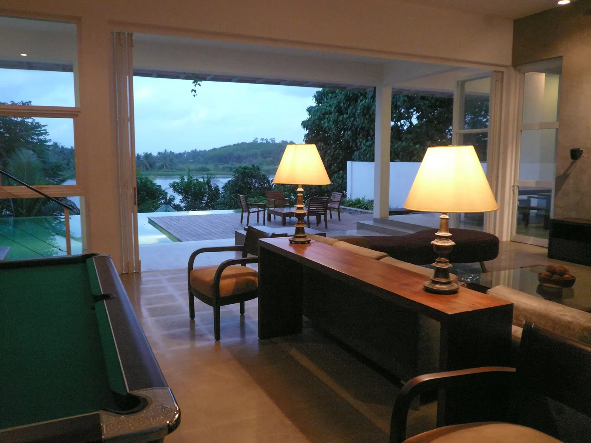

The Contemporary Design Studio (Pvt) Ltd

The Studio
A design story shaped by experience, curiosity, and collaboration.
Who We Are
R D Design (RdD) was founded in 2019 by Ruchi Dhillon, a Chartered Architect, bringing over three decades of design experience, including more than 20 years as a partner and design lead at The Contemporary Design Studio (tCds).
Following the closure of tCds in 2019, the team and ongoing projects transitioned to RdD. Today, project-specific collaborations bring specialised expertise together while retaining a focus on design quality, efficiency and timelines.

The Contemporary Design Studio (Pvt) Ltd

Architecture & Interiors
The Studio
Founded and led by Ruchi Dhillon, R D Design Studio is an architecture and interior design practice based in Colombo.
We are a collective of architects, interior designers, planners, and collaborators and our work is shaped by the belief that design has the power to connect people to one another, to their communities, and to the environments they inhabit
Working closely with our clients, consultants, craftspeople, and specialists across disciplines, we explore thoughtful and considered responses to each brief, creating buildings, interiors, installations, and exhibitions that respond to the evolving ways we live, work, and relate.


Our Process
Every project begins with an understanding of its context — the people, culture, place, and environment that give it meaning. Our approach brings together research, emerging technologies, and an enduring curiosity for new ways of building.
Our design process is rooted in collaboration, integration, and shared vision. We actively involve our clients throughout the design journey, ensuring their aspirations and needs are considered at every stage of the project. By engaging allied disciplines and service engineers from the earliest stages, we foster a coordinated, holistic approach to design—where diverse perspectives and technical expertise converge, transforming collaboration into distinctive architectural expressions that balance technical precision with artistic vision.

The Beginning
Every space starts with a question: how should it feel? We begin by listening to the brief, understanding the land, and shaping an idea around its purpose.

The Process
We work with specialised teams to develop each project from concept to delivery, balancing creativity with a thoughtful design process.

The Outcome
Our spaces are shaped to endure and adapt, through careful attention to materials, craftsmanship and the experience of everyday life.
Our Values
We see architecture as more than an exercise in form-making; it is an opportunity to shape human experience over time. Through light, materiality, scale, and proportion, spaces can influence how we feel, how we interact, and how we experience the rhythms of everyday life.
At the heart of our practice is a commitment to craft, materiality, and a sense of place. We believe architecture can preserve and celebrate cultural identities that make places unique and are constantly exploring how local knowledge, traditional techniques, and contemporary technologies can come together to create spaces that engage the senses and foster a deeper connection between people and the built environment. Spaces that are rooted in their time and place, yet designed to adapt, evolve, and endure the inevitability of change.